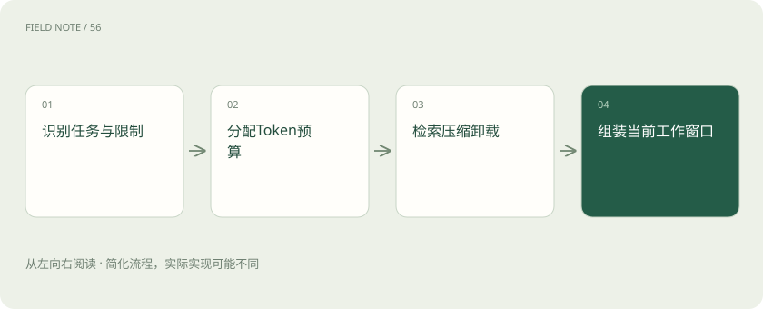
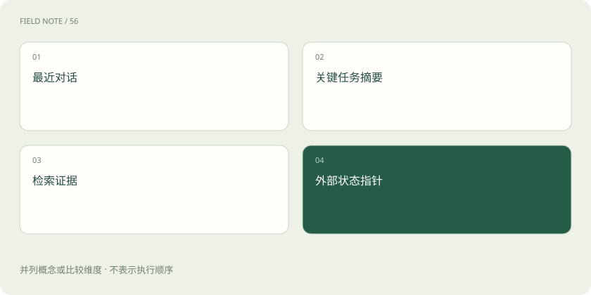

先读哪些知识
先用一个类比理解
类比只帮助建立直觉，不等同于技术的完整机制。
一图看懂

窗口是工作台而非永久仓库
上下文是一次推理实际可用的信息集合，包括指令、消息、工具描述和选入材料。它有容量限制，产品保存了聊天记录也不意味着每轮模型看到全部内容。上下文工程要决定当前任务需要什么、如何呈现以及什么时候移出，而不是承诺把所有对话永远装进模型。
外部数据库可以保存很久，但当前推理只看到被选中的部分。界面上的历史列表、服务端日志和模型输入应分别理解，否则用户容易把界面可见误认为模型已经完整理解。
先算清一轮预算
假设一次请求总额度为 32000 Token，预留输出 4000，系统与规则 2000，工具定义 3000，当前问题 1000，则历史与证据最多还有 22000。若保留历史 6000，证据预算剩 16000。四篇各 5000 的材料总计 20000，已经超额，必须筛选或摘要；这些是教学数字，实际额度由模型与产品约束决定。
若下一轮工具返回又增加 6000 Token，就需要重新分配额度，不能沿用上一轮余量。规划预算是一项持续动作，输出预留还应根据本轮任务复杂度调整。
滑动窗口擅长保留最近互动
窗口策略删除较早消息，成本低且实现简单，适合短期连续操作；但早期约束可能比最近闲聊更重要。应把用户确认的对象、禁止动作和验收条件提取到独立状态区，随任务更新。最近十轮并不是天然正确的选择，重要性、依赖和来源应共同决定保留优先级。
例如首次消息要求使用财年，最近对话只讨论图表颜色。按时间截断会留下颜色而丢掉口径，独立状态区则能让长期约束优先于短期表达细节。
图解：工作窗口的信息来源

压缩必须保留可行动事实
压缩把长历史变成短状态说明，应覆盖目标、已确认限制、完成事项、失败尝试、证据指针和待办。摘要会损失信息，尤其容易漏掉例外与否定句。压缩前后可以检查固定字段，例如“仅内部审阅”是否仍存在；必要时回读原文，不能把摘要当作不可质疑的新事实。
摘要里的“已完成校验”还应指向校验对象与版本。如果材料更新，这条状态可能失效。保留版本关联能避免旧结论在新数据上被无意复用。
检索按问题带回证据
检索先用当前子问题定位候选，再根据相关性、时间、权限和来源筛选片段。排名最高不等于法律或业务上最适用，旧版制度可能词面更相似。应把版本和适用范围一起送入上下文，并保留冲突。如果只给结论不给出处，后续模型难以判断是同一事实的更新还是两项不同规定。
检索质量也取决于问题拆分。先询问适用对象，再查对应例外，往往比用整段模糊请求一次搜索更容易覆盖关键条件，但会增加检索次数和延迟。
卸载信息需要可回找指针
表格原始行、完整日志和大附件可以留在外部存储，窗口内保留摘要与稳定标识。这样降低输入成本，但增加二次读取延迟，也依赖访问权限和存储有效期。写“详情见附件”却没有附件编号、范围与版本，会让卸载变成丢失；指针还应说明何种问题需要回读哪些原始数据。
外部存储的权限变化会让指针失效，因此恢复流程要检查链接可访问性。只保留不可访问的地址，不能算可靠的知识保存，也不能据此生成未经复核的细节。
遗忘与长期记忆不能混为一谈
遗忘是当前窗口不再包含某段材料；长期记忆是系统在窗口之外有选择地保存并重新取回信息。长期记忆并非每个 Agent 必需，单次报表任务往往只需任务状态。跨会话偏好也应区分用户主动确认与系统推断，设置更新、删除和过期规则，避免把一次临时要求永久施加给未来任务。
保存记忆还会带来错误固化风险。若系统曾把推测写成事实，后续检索会不断强化它，所以记忆条目要有来源、确认状态以及修订入口，而非单纯累积更多文本。
图解：上下文工程的关键检查
用关键事实丢失定位故障
例如采购比较中，模型读过“供应商乙报价不含维护费”，压缩后只留下价格数字，最后推荐乙。问题不是模型没有能力比较，而是关键条件退出了工作台。应把费用口径加入必保字段，并在出结论前回读报价条款。扩大窗口可能缓解，却不能替代明确的事实保留规则与来源核验。
这类检查应使用真实失败样例：故意把例外放在早期消息，再经过多轮工具返回与压缩，观察最终是否仍遵守。只测试短问题无法验证长任务中的信息保真。
放在一起对比
| 责任环节 | 具体判断依据 | 对应处置 |
|---|---|---|
| 先算清一轮预算 | 假设一次请求总额度为 32000 Token，预留输出 4000，系统与规则 2000，工具定义 3000，当前问题 1000，则历史与证据最多还有 22000 | 若保留历史 6000，证据预算剩 16000 |
| 检索按问题带回证据 | 检索先用当前子问题定位候选，再根据相关性、时间、权限和来源筛选片段 | 排名最高不等于法律或业务上最适用，旧版制度可能词面更相似 |
| 遗忘与长期记忆不能混为一谈 | 遗忘是当前窗口不再包含某段材料；长期记忆是系统在窗口之外有选择地保存并重新取回信息 | 长期记忆并非每个 Agent 必需，单次报表任务往往只需任务状态 |
放进真实场景
行程助手最初收到“周三必须回上海”，随后检索数十页交通信息。摘要必须保留这一约束及用户确认状态；若只留下目的地和预算，最终便可能推荐周四返程。
别踩这个误区
想一想
压缩后的任务摘要应优先保存哪些信息？
保存目标、用户确认的限制、证据版本、已完成状态和待解决问题，并保留原文指针。
关联阅读
资料与边界
本文为原创知识讲解。类比和图示经过简化；示例数字不代表实测或报价。整理日期：2026-11-05。文末列出对应技术的原始资料，具体功能与版本支持请以原文为准。